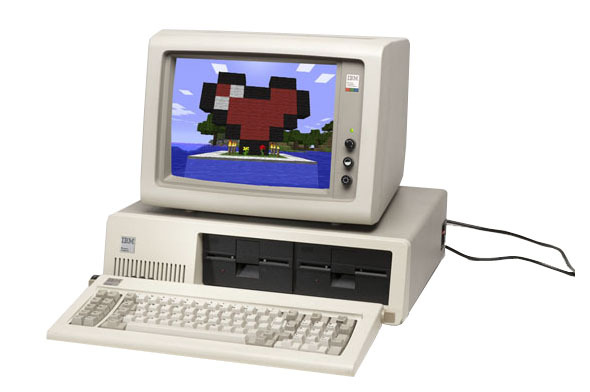
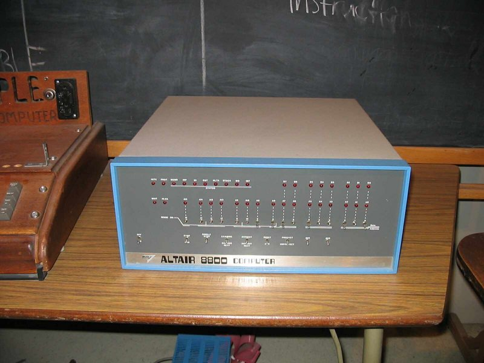

Microcomputers:

A microcomputer is a small, relatively inexpensive computer with a microprocessor as its central processing unit (CPU). It includes a microprocessor, memory, and minimal input/output (I/O) circuitry mounted on a single printed circuit board.
Microcomputers became popular in the 1970s and 1980s with the advent of increasingly powerful microprocessors. The predecessors to these computers, mainframes and minicomputers, were comparatively much larger and more expensive.
Origins:
The term microcomputer came into popular use after the introduction of the minicomputer, although Isaac Asimov used the term in his short story "The Dying Night" as early as 1956 (published in The Magazine of Fantasy and Science Fiction in July that year).
Some major developments in Microcomputers:
The French developers of the Micral N (1973) filed their patents with the term "Micro-ordinateur", a literal equivalent of "Microcomputer", to designate a solid state machine designed with a microprocessor.
In the USA, the earliest models such as the Altair 8800 were often sold as kits to be assembled by the user, and came with as little as 256 bytes of RAM, and no input/output devices other than indicator lights and switches, useful as a proof of concept to demonstrate what such a simple device could do.
Increasingly inexpensive logic chips such as the 7400 series allowed cheap dedicated circuitry for improved user interfaces such as keyboard input, instead of simply a row of switches to toggle bits one at a time.
Use of audio cassettes for inexpensive data storage replaced manual re-entry of a program every time the device was powered on.Large cheap arrays of silicon logic gates in the form of read-only memory and EPROMs allowed utility programs and self-booting kernels to be stored within microcomputers.
Some of the revolutionary Microcomputers:
-
Altair 8800:

The MITS Altair 8800 was designed around a new microprocessor, the Intel 8080, and debuted in 1975. Its announcement on the January 1975 issue of Popular Electronics magazine led the Albuquerque-based manufacturer to a four-month backlog attempting to fill orders.
The Altair is considered the first home computer.Its only input was a series of front-panel switches. However, it had a motherboard with a bus, which allowed other companies to provide keyboards, tape readers and other devices to access the registers.
A group of Harvard students wrote a BASIC interpreter for the MITS. These students -- Steve Ballmer, Paul Allen, and Bill Gates -- left school to focus on code development and not long afterward created MicroSoft.
-
Radio Shack:

The TRS-80 series computers were based on the Zilog Z80 processor and ran TRS-DOS on a monochrome monitor. It used floppy disks and then later hacks were made to use hard drives.
The TRS-COCO computer was developed as a home computer with color graphics and the TRS-80 series was marketed towards businesses.
The COCO used a TV set as a monitor to save on costs and tried to compete against the Atari 400 and 800 and Commodore 64 series. The COCO used a 6809 Motorola processor and ran OS9 (no relation to Mac OS 9).
The Tandy 1000 series was based on the IBM PCJr graphics and sound chips, it used expansion slots but had the pins wired differently than PC and AT ISA expansion slots, and ran Deskmate as a GUI under Tandy DOS (Which was a modified MS-DOS that even reversed the DOS Interrupts to make sure it only ran on Tandy series computers.)
Many MS-DOS video games were made with CGA, EGA, and Tandy graphics, and the Tandy version had advanced sound until the ISA sound cards like the AdLib and Sound Blaster got created. Eventually the IBM PS/2 series came out with VGA graphics and nobody wanted to buy the Tandy series PCs anymore.
Once Windows 3.X became standard Radio Shack stopped selling the Tandy 1000 series, and then eventually dropped out of the PC business and sold PCs made by other companies like Dell or Compaq, and then eventually stopped selling computers.
-
Apple II:

The Apple II was produced by Apple Computer. It used a BASIC-type operating system and was marketed toward home use. The original Apple I computer was created by Steve Wozniak and Steve Jobs in a garage.
Both were college drop-outs that wanted to make one of the first micro computers with a color screen for under $1000.
Steve Wozniak carefully chose chips from a catalog to make sure he got the best price and quality and settled for a MOS 6502 processor, which was a Motorola 6800 clone with some of the pins changed to avoid copyright laws.
The MOS 6502 processor was cheaper and helped make the Apple I and then later Apple II series cost effective. The original Apple I was $666, and sold enough units in custom wooden cases to not only pay back loans, but help fund the Apple II series. The Apple II series ran Apple DOS and then later Pro DOS and a version of BASIC. It had expansion slots for floppy drive controllers, modems, and other things like a Z80 CP/M card to run CPM-80 software.
Steve Wozniak was in a plane crash and lost most of his memory and dropped out of Apple, and Apple tried to make an Apple III series but it was nothing like the Apple II and had series hardware issues like loose chips and Apple's fix was to drop it six feet from a chair to snap the chips back into place.
After the Apple II, Apple II+, Apple IIe, the Apple IIc was developed to help Apple compete in the home market against the Commodore 64, Atari 800, and IBM PCjr. After the Macintosh and Amiga the Apple //GS was developed with a 65C816 16 bit CPU to run Apple II code and enhanced Apple IIGS code that was based on the Mac Finder GUI, and later the Macintosh II series replaced it and the Macintosh II NuBus slots had an Apple II emulator card to run Apple II software.
Apple used to have the slogan "Apple II Forever" but eventually abandoned the Apple II series in favor of the Macintosh series.
-
Commodore 64:

The Commodore 64 was a revolution at the time it was released in 1981, expanding on the Vic 20's 8 colors to an amazing 16 colors and increasing the screen resolution to 40 columns and 25 lines. A 3 voice synthesizer topped off the features of this amazing computer.
In its time. the Commodore 64 was one of the most popular home computers in the market with thousands of games and business applications available.
Its built-in BASIC and a plethora of magazines (ZZap64, Commodore, Compute's Gazette) with programs for readers to enter, enabled many people to learn BASIC and even Machine Code.
In 1986, the C64C was introduced, its changes (a lighter colored case and a different shape) were mainly cosmetic but still compatible with all previous add-ons and software.
Another version of the C64 was the SX-64.This was a "portable" version of the Commodore 64. I use the term portable very loosely, this thing was heavy. It contained a 5-inch color Cathode Ray Tube (CRT) monitor and a built-in disk drive. The keyboard doubled as the lid of the unit
-
Atari ST:

A wire wrap of RBP was completed by late August and in September began working with Digital Research Incorporated (DRI) on porting it's GEM GUI and newly developed GEMDOS to run as part of the TOS (The Operating System). ST also stood for SixTeen because the 68000 that powered it had a 16 bit I/O bus.
The first ST series model, the 520ST, was released in 1985, to be followed by the 1040ST the following year. Later the Atari TT used the 68020 and 68030 processors that were Thirty Two bits.
The Atari Falcon was developed and released in 1992 to provide a 32 bit multimedia system and included a DSP audio chip, enhanced graphics modes, and a multi-tasking operating system.
Like the Amiga, the Atari ST and above suffered lack of third party software support and lack of proper marketing. When the IBM PC Clones used 80386 processors and above and ran Microsoft Windows 3.X and used VGA or SVGA and the Sound Blaster or similar sound card, they were cheaper than the Amiga or Atari series computers and drove both companies into almost bankruptcy. Atari was resold many times, and now is a Video Game company for modern game consoles and Windows and Macintosh computers.
A version of the Atari ST software is available via the MiNT project for the Atari St series hardware, an Ubuntu port of MiNT is being done to run Atari ST software under Ubuntu. When Windows 95 and above became standard many Atari ST users migrated to PC Clones and Windows, while others went to the Macintosh. The Atari ST had a Macintosh emulator called Magic Sack that used an old Macintosh Plus and under BIOS chip to emulate a Macintosh Plus or under system.
-
IBM PC:

The IBM PC was a personal computer built around the Intel 8088 microprocessor (which was modeled after the Intel 8086). It became standardized, and today, the majority of personal computers are IBM compatible.
IBM started out with the IBM DisplayWrite word processor, and then later made the IBM 5150 aka IBM PC based on the Intel 8088 processor.
But DOS was the more popular operating system.
IBM made the IBM PC/XT which was like the IBM PC but had more expansion slots, and then the IBM PC/AT based on the Intel 80286 16 bit processor (Skipping the Intel 80186) and 16 Bit ISA bus. Originally IBM had two displays MGA (Monochrome) 80X25 text graphics, and CGA (Color Graphic Adapter) with 80X25 text mode and 16 colors, 320x200 in 4 out of 16 colors and 640x200 in 2 colors.
To compete with Atari and Commodore IBM made the IBM PCJr for home use, but it flopped despite having a wireless infrared keyboard and cartridge slot to make loading software easier. Each expansion took place on a sidebus and the more sidebus adapters added to it the larger it got.
The PCJr had better graphics and a sound chip and the original PC series only had a PC speaker with limited sounds, so PCJr video games were better, but IBM sold the PCJr graphics and sound to Tandy for their Tandy 1000 series.IBM invented EGA graphics which used 16 colors in 320x200 mode and 4 colors in 640x200 mode. Eventually IBM moved on to the PS/2 series and OS/2, Personal Series 2 computers (A PS/1 was made with IBM PC specs but a better graphics card aka VGA) and PS/2 series had VGA graphics 256 colors out of 16 million and up to 640x480 graphics.
Most of the PS/2 series had MCA slots or Microchannel slots that were not ISA compatible like the original IBM PC (and PS/1) and IBM considered it their "Clone Killer" while PC Clone makers tried to push EISA also a 32 bit expansion bus but backward compatible with 16 bit ISA.
Ultimately either one caught on and Intel's PCI bus replaced ISA and Intel's VESA Local Bus briefly caught on that extended ISA with another slot in front of it for 32 bits, but ultimately PCI and later PCI Express beat all.